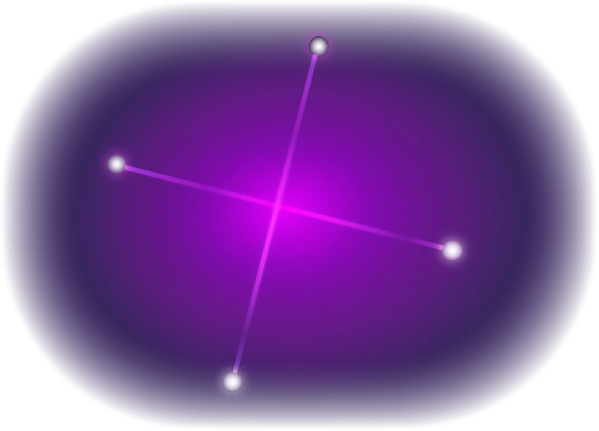

Fondations · Croix d'Incarnation
En Human Design, votre Croix d'Incarnation décrit le thème majeur de votre incarnation. Elle est définie par les quatre activations de Portes de votre Soleil de Personnalité, votre Terre de Personnalité, votre Soleil de Design et votre Terre de Design, et ces Croix sont organisées à travers les quatre Quartiers du Mandala et les trois géométries de Croix.

Votre Croix d'Incarnation est déterminée par quatre activations de Portes spécifiques dans votre carte : votre Porte Soleil de Personnalité, Porte Terre de Personnalité, Porte Soleil de Design et Porte Terre de Design. Ensemble, ces quatre Portes forment la structure thématique centrale de votre Croix d'Incarnation.
La Porte Soleil de Personnalité clé la Croix d'Incarnation à son Quartier et donne à la Croix son orientation consciente dominante, tandis que les Lignes du Soleil et de la Terre définissent sa géométrie. Même ainsi, la Croix n'est pas déterminée par le Soleil de Personnalité seul. Une Croix d'Incarnation est constituée par les quatre Portes, et les trois autres ne sont pas simplement des adjectifs modifiant la Porte Soleil, mais des éléments essentiels de la structure thématique complète de la Croix.
Il y a 192 Croix d'Incarnation au total. Chacune des 64 Portes peut servir de Porte Soleil de Personnalité, et chacune produit trois variations géométriques : une Croix d'Angle Droit, une Croix d'Angle Gauche et une Croix de Juxtaposition, donnant 64 × 3 = 192.
Personnelle
Les Croix d'Angle Droit portent une géométrie personnelle. Leur trajectoire est principalement personnelle plutôt que transpersonnelle. Le thème de vie est autonome et n'est pas orienté par l'échange interpersonnel de la même façon qu'une Croix d'Angle Gauche.
Transpersonnelle
Les Croix d'Angle Gauche portent une géométrie transpersonnelle. Leur but tend à se déployer à travers l'interaction, l'échange et les relations, reflétant un thème de vie qui s'élabore à travers le contact avec les autres plutôt que dans l'isolement.
Pont
Les Croix de Juxtaposition servent de pont solide entre les géométries d'Angle Droit et d'Angle Gauche. Leur thème de vie tend à s'exprimer de manière spécifique et stable, reliant le personnel et le transpersonnel.
Les 64 Portes sont organisées autour du Mandala d'Incarnation en quatre Quartiers, chacun contenant 16 Portes. Le Quartier dans lequel tombe votre Soleil de Personnalité détermine le paysage thématique large de votre Croix. Chaque Quartier représente une orientation thématique distincte au sein du Mandala d'Incarnation, façonnant le contexte plus large à travers lequel une Croix s'exprime.
Le Quartier du Mental
Le but de la conscience mentale. Portes 13, 49, 30, 55, 37, 63, 22, 36, 25, 17, 21, 51, 42, 03, 27, 24. Les Croix de ce Quartier sont orientées vers la conscience mentale, l'enquête et l'initiation de la compréhension.
Le Quartier de la Forme
Le but de la forme et de la vie matérielle. Portes 02, 23, 08, 20, 16, 35, 45, 12, 15, 52, 39, 53, 62, 56, 31, 33. Les Croix de ce Quartier sont orientées vers la forme, la structure, la vie matérielle et l'expression des idées dans le monde.
Le Quartier de la Conscience
Le but du lien et de la relation. Portes 07, 04, 29, 59, 40, 64, 47, 06, 46, 18, 48, 57, 32, 50, 28, 44. Les Croix de ce Quartier sont orientées vers la relation, le lien et la conscience à travers l'interaction avec les autres.
Le Quartier de l'Énergie
Le but de la transformation. Portes 01, 43, 14, 34, 09, 05, 26, 11, 10, 58, 38, 54, 61, 60, 41, 19. Les Croix de ce Quartier sont orientées vers la transformation, la mutation et l'énergie pour le changement évolutionnaire.
Voici la liste complète des 192 Croix d'Incarnation, organisées par Quartier et Porte Soleil de Personnalité. Pour chaque entrée, le nom de la Croix, la configuration à quatre portes et le type de géométrie sont présentés.
Le Quartier du Mental · Portes 13, 49, 30, 55, 37, 63, 22, 36, 25, 17, 21, 51, 42, 03, 27, 24
| Porte Soleil de Personnalité | Nom de la Croix | Type |
|---|---|---|
| 13 | Croix d'Angle Droit du Sphinx (Portes 13, 07, 01, 02) | RAX |
| 13 | Croix d'Angle Gauche des Masques (Portes 13, 07, 02, 01) | LAX |
| 13 | Croix de Juxtaposition de l'Écoute (Portes 13, 07, 01, 02) | JX |
| 49 | Croix d'Angle Droit de l'Explication (Portes 49, 04, 43, 23) | RAX |
| 49 | Croix d'Angle Gauche de la Révolution (Portes 49, 04, 23, 43) | LAX |
| 49 | Croix de Juxtaposition des Principes (Portes 49, 04, 43, 23) | JX |
| 30 | Croix d'Angle Droit de la Contagion (Portes 30, 29, 14, 08) | RAX |
| 30 | Croix d'Angle Gauche de l'Industrie (Portes 30, 29, 08, 14) | LAX |
| 30 | Croix de Juxtaposition des Destins (Portes 30, 29, 14, 08) | JX |
| 55 | Croix d'Angle Droit du Phénix Endormi (Portes 55, 59, 34, 20) | RAX |
| 55 | Croix d'Angle Gauche de l'Esprit (Portes 55, 59, 20, 34) | LAX |
| 55 | Croix de Juxtaposition des Humeurs (Portes 55, 59, 34, 20) | JX |
| 37 | Croix d'Angle Droit de la Planification (Portes 37, 40, 09, 16) | RAX |
| 37 | Croix d'Angle Gauche de la Migration (Portes 37, 40, 16, 09) | LAX |
| 37 | Croix de Juxtaposition des Négociations (Portes 37, 40, 09, 16) | JX |
| 63 | Croix d'Angle Droit de la Conscience (Portes 63, 64, 05, 35) | RAX |
| 63 | Croix d'Angle Gauche de la Domination (Portes 63, 64, 35, 05) | LAX |
| 63 | Croix de Juxtaposition des Doutes (Portes 63, 64, 05, 35) | JX |
| 22 | Croix d'Angle Droit de la Souveraineté (Portes 22, 47, 26, 45) | RAX |
| 22 | Croix d'Angle Gauche de l'Information (Portes 22, 47, 45, 26) | LAX |
| 22 | Croix de Juxtaposition de la Grâce (Portes 22, 47, 26, 45) | JX |
| 36 | Croix d'Angle Droit de l'Éden (Portes 36, 06, 11, 12) | RAX |
| 36 | Croix d'Angle Gauche du Plan (Portes 36, 06, 12, 11) | LAX |
| 36 | Croix de Juxtaposition de la Crise (Portes 36, 06, 11, 12) | JX |
| 25 | Croix d'Angle Droit du Vaisseau d'Amour (Portes 25, 46, 10, 15) | RAX |
| 25 | Croix d'Angle Gauche de la Guérison (Portes 25, 46, 15, 10) | LAX |
| 25 | Croix de Juxtaposition de l'Innocence (Portes 25, 46, 10, 15) | JX |
| 17 | Croix d'Angle Droit du Service (Portes 17, 18, 58, 52) | RAX |
| 17 | Croix d'Angle Gauche du Bouleversement (Portes 17, 18, 52, 58) | LAX |
| 17 | Croix de Juxtaposition des Opinions (Portes 17, 18, 58, 52) | JX |
| 21 | Croix d'Angle Droit de la Tension (Portes 21, 48, 38, 39) | RAX |
| 21 | Croix d'Angle Gauche de l'Effort (Portes 21, 48, 39, 38) | LAX |
| 21 | Croix de Juxtaposition du Contrôle (Portes 21, 48, 38, 39) | JX |
| 51 | Croix d'Angle Droit de la Pénétration (Portes 51, 57, 54, 53) | RAX |
| 51 | Croix d'Angle Gauche du Clairon (Portes 51, 57, 53, 54) | LAX |
| 51 | Croix de Juxtaposition du Choc (Portes 51, 57, 54, 53) | JX |
| 42 | Croix d'Angle Droit de Maya (Portes 42, 32, 61, 62) | RAX |
| 42 | Croix d'Angle Gauche de la Limitation (Portes 42, 32, 62, 61) | LAX |
| 42 | Croix de Juxtaposition de l'Achèvement (Portes 42, 32, 61, 62) | JX |
| 03 | Croix d'Angle Droit des Lois (Portes 03, 50, 60, 56) | RAX |
| 03 | Croix d'Angle Gauche des Souhaits (Portes 03, 50, 56, 60) | LAX |
| 03 | Croix de Juxtaposition de la Mutation (Portes 03, 50, 60, 56) | JX |
| 27 | Croix d'Angle Droit de l'Inattendu (Portes 27, 28, 41, 31) | RAX |
| 27 | Croix d'Angle Gauche de l'Alignement (Portes 27, 28, 31, 41) | LAX |
| 27 | Croix de Juxtaposition du Soin (Portes 27, 28, 41, 31) | JX |
| 24 | Croix d'Angle Droit des Quatre Voies (Portes 24, 44, 19, 33) | RAX |
| 24 | Croix d'Angle Gauche de l'Incarnation (Portes 24, 44, 33, 19) | LAX |
| 24 | Croix de Juxtaposition de la Rationalisation (Portes 24, 44, 19, 33) | JX |
Le Quarter de la Forme · Portes 02, 23, 08, 20, 16, 35, 45, 12, 15, 52, 39, 53, 62, 56, 31, 33
| Porte du Soleil de Personnalité | Nom de la Croix | Type |
|---|---|---|
| 02 | Croix d'Angle Droit du Sphinx (Portes 02, 01, 13, 07) | RAX |
| 02 | Croix d'Angle Gauche du Conducteur (Portes 02, 01, 07, 13) | LAX |
| 02 | Croix de Juxtaposition du Conducteur (Portes 02, 01, 13, 07) | JX |
| 23 | Croix d'Angle Droit de l'Explication (Portes 23, 43, 49, 04) | RAX |
| 23 | Croix d'Angle Gauche de la Dévotion (Portes 23, 43, 04, 49) | LAX |
| 23 | Croix de Juxtaposition de l'Assimilation (Portes 23, 43, 49, 04) | JX |
| 08 | Croix d'Angle Droit de la Contagion (Portes 08, 14, 30, 29) | RAX |
| 08 | Croix d'Angle Gauche de l'Incertitude (Portes 08, 14, 29, 30) | LAX |
| 08 | Croix de Juxtaposition de la Contribution (Portes 08, 14, 30, 29) | JX |
| 20 | Croix d'Angle Droit du Phénix Endormi (Portes 20, 34, 55, 59) | RAX |
| 20 | Croix d'Angle Gauche de la Dualité (Portes 20, 34, 59, 55) | LAX |
| 20 | Croix de Juxtaposition du Présent (Portes 20, 34, 55, 59) | JX |
| 16 | Croix d'Angle Droit de la Planification (Portes 16, 09, 37, 40) | RAX |
| 16 | Croix d'Angle Gauche de l'Identification (Portes 16, 09, 40, 37) | LAX |
| 16 | Croix de Juxtaposition de l'Expérimentation (Portes 16, 09, 37, 40) | JX |
| 35 | Croix d'Angle Droit de la Conscience (Portes 35, 05, 63, 64) | RAX |
| 35 | Croix d'Angle Gauche de la Séparation (Portes 35, 05, 64, 63) | LAX |
| 35 | Croix de Juxtaposition de l'Expérience (Portes 35, 05, 63, 64) | JX |
| 45 | Croix d'Angle Droit de la Souveraineté (Portes 45, 26, 22, 47) | RAX |
| 45 | Croix d'Angle Gauche de la Confrontation (Portes 45, 26, 47, 22) | LAX |
| 45 | Croix de Juxtaposition de la Possession (Portes 45, 26, 22, 47) | JX |
| 12 | Croix d'Angle Droit d'Éden (Portes 12, 11, 36, 06) | RAX |
| 12 | Croix d'Angle Gauche de l'Éducation (Portes 12, 11, 06, 36) | LAX |
| 12 | Croix de Juxtaposition de l'Articulation (Portes 12, 11, 36, 06) | JX |
| 15 | Croix d'Angle Droit du Vase de l'Amour (Portes 15, 10, 25, 46) | RAX |
| 15 | Croix d'Angle Gauche de la Prévention (Portes 15, 10, 46, 25) | LAX |
| 15 | Croix de Juxtaposition des Extrêmes (Portes 15, 10, 25, 46) | JX |
| 52 | Croix d'Angle Droit du Service (Portes 52, 58, 17, 18) | RAX |
| 52 | Croix d'Angle Gauche des Exigences (Portes 52, 58, 18, 17) | LAX |
| 52 | Croix de Juxtaposition de l'Immobilité (Portes 52, 58, 17, 18) | JX |
| 39 | Croix d'Angle Droit de la Tension (Portes 39, 38, 21, 48) | RAX |
| 39 | Croix d'Angle Gauche de l'Individualisme (Portes 39, 38, 48, 21) | LAX |
| 39 | Croix de Juxtaposition de la Provocation (Portes 39, 38, 21, 48) | JX |
| 53 | Croix d'Angle Droit de la Pénétration (Portes 53, 54, 51, 57) | RAX |
| 53 | Croix d'Angle Gauche des Cycles (Portes 53, 54, 57, 51) | LAX |
| 53 | Croix de Juxtaposition des Commencements (Portes 53, 54, 51, 57) | JX |
| 62 | Croix d'Angle Droit de Maya (Portes 62, 61, 42, 32) | RAX |
| 62 | Croix d'Angle Gauche de l'Obscurcissement (Portes 62, 61, 32, 42) | LAX |
| 62 | Croix de Juxtaposition du Détail (Portes 62, 61, 42, 32) | JX |
| 56 | Croix d'Angle Droit des Lois (Portes 56, 60, 03, 50) | RAX |
| 56 | Croix d'Angle Gauche de la Distraction (Portes 56, 60, 50, 03) | LAX |
| 56 | Croix de Juxtaposition de la Stimulation (Portes 56, 60, 03, 50) | JX |
| 31 | Croix d'Angle Droit de l'Inattendu (Portes 31, 41, 27, 28) | RAX |
| 31 | Croix d'Angle Gauche de l'Alpha (Portes 31, 41, 28, 27) | LAX |
| 31 | Croix de Juxtaposition de l'Influence (Portes 31, 41, 27, 28) | JX |
| 33 | Croix d'Angle Droit des Quatre Voies (Portes 33, 19, 24, 44) | RAX |
| 33 | Croix d'Angle Gauche du Raffinement (Portes 33, 19, 44, 24) | LAX |
| 33 | Croix de Juxtaposition de la Retraite (Portes 33, 19, 24, 44) | JX |
Le Quarter de la Conscience · Portes 07, 04, 29, 59, 40, 64, 47, 06, 46, 18, 48, 57, 32, 50, 28, 44
| Porte du Soleil de Personnalité | Nom de la Croix | Type |
|---|---|---|
| 07 | Croix d'Angle Droit du Sphinx (Portes 07, 13, 02, 01) | RAX |
| 07 | Croix d'Angle Gauche des Masques (Portes 07, 13, 01, 02) | LAX |
| 07 | Croix de Juxtaposition de l'Interaction (Portes 07, 13, 02, 01) | JX |
| 04 | Croix d'Angle Droit de l'Explication (Portes 04, 49, 23, 43) | RAX |
| 04 | Croix d'Angle Gauche de la Révolution (Portes 04, 49, 43, 23) | LAX |
| 04 | Croix de Juxtaposition de la Formulation (Portes 04, 49, 23, 43) | JX |
| 29 | Croix d'Angle Droit de la Contagion (Portes 29, 30, 08, 14) | RAX |
| 29 | Croix d'Angle Gauche de l'Industrie (Portes 29, 30, 14, 08) | LAX |
| 29 | Croix de Juxtaposition de l'Engagement (Portes 29, 30, 08, 14) | JX |
| 59 | Croix d'Angle Droit du Phénix Endormi (Portes 59, 55, 20, 34) | RAX |
| 59 | Croix d'Angle Gauche de l'Esprit (Portes 59, 55, 34, 20) | LAX |
| 59 | Croix de Juxtaposition de la Stratégie (Portes 59, 55, 20, 34) | JX |
| 40 | Croix d'Angle Droit de la Planification (Portes 40, 37, 16, 09) | RAX |
| 40 | Croix d'Angle Gauche de la Migration (Portes 40, 37, 09, 16) | LAX |
| 40 | Croix de Juxtaposition du Déni (Portes 40, 37, 16, 09) | JX |
| 64 | Croix d'Angle Droit de la Conscience (Portes 64, 63, 35, 05) | RAX |
| 64 | Croix d'Angle Gauche de la Domination (Portes 64, 63, 05, 35) | LAX |
| 64 | Croix de Juxtaposition de la Confusion (Portes 64, 63, 35, 05) | JX |
| 47 | Croix d'Angle Droit de la Souveraineté (Portes 47, 22, 45, 26) | RAX |
| 47 | Croix d'Angle Gauche de l'Information (Portes 47, 22, 26, 45) | LAX |
| 47 | Croix de Juxtaposition de l'Oppression (Portes 47, 22, 45, 26) | JX |
| 06 | Croix d'Angle Droit d'Éden (Portes 06, 36, 12, 11) | RAX |
| 06 | Croix d'Angle Gauche du Plan (Portes 06, 36, 11, 12) | LAX |
| 06 | Croix de Juxtaposition du Conflit (Portes 06, 36, 12, 11) | JX |
| 46 | Croix d'Angle Droit du Vase de l'Amour (Portes 46, 25, 15, 10) | RAX |
| 46 | Croix d'Angle Gauche de la Guérison (Portes 46, 25, 10, 15) | LAX |
| 46 | Croix de Juxtaposition de la Sérendipité (Portes 46, 25, 15, 10) | JX |
| 18 | Croix d'Angle Droit du Service (Portes 18, 17, 52, 58) | RAX |
| 18 | Croix d'Angle Gauche du Bouleversement (Portes 18, 17, 58, 52) | LAX |
| 18 | Croix de Juxtaposition de la Correction (Portes 18, 17, 52, 58) | JX |
| 48 | Croix d'Angle Droit de la Tension (Portes 48, 21, 39, 38) | RAX |
| 48 | Croix d'Angle Gauche de l'Effort (Portes 48, 21, 38, 39) | LAX |
| 48 | Croix de Juxtaposition de la Profondeur (Portes 48, 21, 39, 38) | JX |
| 57 | Croix d'Angle Droit de la Pénétration (Portes 57, 51, 53, 54) | RAX |
| 57 | Croix d'Angle Gauche du Clairon (Portes 57, 51, 54, 53) | LAX |
| 57 | Croix de Juxtaposition de l'Intuition (Portes 57, 51, 53, 54) | JX |
| 32 | Croix d'Angle Droit de Maya (Portes 32, 42, 62, 61) | RAX |
| 32 | Croix d'Angle Gauche de la Limitation (Portes 32, 42, 61, 62) | LAX |
| 32 | Croix de Juxtaposition de la Conservation (Portes 32, 42, 62, 61) | JX |
| 50 | Croix d'Angle Droit des Lois (Portes 50, 03, 56, 60) | RAX |
| 50 | Croix d'Angle Gauche des Souhaits (Portes 50, 03, 60, 56) | LAX |
| 50 | Croix de Juxtaposition des Valeurs (Portes 50, 03, 56, 60) | JX |
| 28 | Croix d'Angle Droit de l'Inattendu (Portes 28, 27, 31, 41) | RAX |
| 28 | Croix d'Angle Gauche de l'Alignement (Portes 28, 27, 41, 31) | LAX |
| 28 | Croix de Juxtaposition des Risques (Portes 28, 27, 31, 41) | JX |
| 44 | Croix d'Angle Droit des Quatre Voies (Portes 44, 24, 33, 19) | RAX |
| 44 | Croix d'Angle Gauche de l'Incarnation (Portes 44, 24, 19, 33) | LAX |
| 44 | Croix de Juxtaposition de la Vigilance (Portes 44, 24, 33, 19) | JX |
Le Quarter de l'Énergie · Portes 01, 43, 14, 34, 09, 05, 26, 11, 10, 58, 38, 54, 61, 60, 41, 19
| Porte du Soleil de Personnalité | Nom de la Croix | Type |
|---|---|---|
| 01 | Croix d'Angle Droit du Sphinx (Portes 01, 02, 07, 13) | RAX |
| 01 | Croix d'Angle Gauche de la Défiance (Portes 01, 02, 13, 07) | LAX |
| 01 | Croix de Juxtaposition de l'Expression de Soi (Portes 01, 02, 07, 13) | JX |
| 43 | Croix d'Angle Droit de l'Explication (Portes 43, 23, 04, 49) | RAX |
| 43 | Croix d'Angle Gauche de la Dévotion (Portes 43, 23, 49, 04) | LAX |
| 43 | Croix de Juxtaposition de la Perspicacité (Portes 43, 23, 04, 49) | JX |
| 14 | Croix d'Angle Droit de la Contagion (Portes 14, 08, 29, 30) | RAX |
| 14 | Croix d'Angle Gauche de l'Incertitude (Portes 14, 08, 30, 29) | LAX |
| 14 | Croix de Juxtaposition de l'Autonomisation (Portes 14, 08, 29, 30) | JX |
| 34 | Croix d'Angle Droit du Phénix Endormi (Portes 34, 20, 59, 55) | RAX |
| 34 | Croix d'Angle Gauche de la Dualité (Portes 34, 20, 55, 59) | LAX |
| 34 | Croix de Juxtaposition du Pouvoir (Portes 34, 20, 59, 55) | JX |
| 09 | Croix d'Angle Droit de la Planification (Portes 09, 16, 40, 37) | RAX |
| 09 | Croix d'Angle Gauche de l'Identification (Portes 09, 16, 37, 40) | LAX |
| 09 | Croix de Juxtaposition de la Concentration (Portes 09, 16, 40, 37) | JX |
| 05 | Croix d'Angle Droit de la Conscience (Portes 05, 35, 64, 63) | RAX |
| 05 | Croix d'Angle Gauche de la Séparation (Portes 05, 35, 63, 64) | LAX |
| 05 | Croix de Juxtaposition des Habitudes (Portes 05, 35, 64, 63) | JX |
| 26 | Croix d'Angle Droit de la Souveraineté (Portes 26, 45, 47, 22) | RAX |
| 26 | Croix d'Angle Gauche de la Confrontation (Portes 26, 45, 22, 47) | LAX |
| 26 | Croix de Juxtaposition du Trompeur (Portes 26, 45, 47, 22) | JX |
| 11 | Croix d'Angle Droit d'Éden (Portes 11, 12, 06, 36) | RAX |
| 11 | Croix d'Angle Gauche de l'Éducation (Portes 11, 12, 36, 06) | LAX |
| 11 | Croix de Juxtaposition des Idées (Portes 11, 12, 06, 36) | JX |
| 10 | Croix d'Angle Droit du Vase de l'Amour (Portes 10, 15, 46, 25) | RAX |
| 10 | Croix d'Angle Gauche de la Prévention (Portes 10, 15, 25, 46) | LAX |
| 10 | Croix de Juxtaposition du Comportement (Portes 10, 15, 46, 25) | JX |
| 58 | Croix d'Angle Droit du Service (Portes 58, 52, 18, 17) | RAX |
| 58 | Croix d'Angle Gauche des Exigences (Portes 58, 52, 17, 18) | LAX |
| 58 | Croix de Juxtaposition de la Vitalité (Portes 58, 52, 18, 17) | JX |
| 38 | Croix d'Angle Droit de la Tension (Portes 38, 39, 48, 21) | RAX |
| 38 | Croix d'Angle Gauche de l'Individualisme (Portes 38, 39, 21, 48) | LAX |
| 38 | Croix de Juxtaposition de l'Opposition (Portes 38, 39, 48, 21) | JX |
| 54 | Croix d'Angle Droit de la Pénétration (Portes 54, 53, 57, 51) | RAX |
| 54 | Croix d'Angle Gauche des Cycles (Portes 54, 53, 51, 57) | LAX |
| 54 | Croix de Juxtaposition de l'Ambition (Portes 54, 53, 57, 51) | JX |
| 61 | Croix d'Angle Droit de Maya (Portes 61, 62, 32, 42) | RAX |
| 61 | Croix d'Angle Gauche de l'Obscurcissement (Portes 61, 62, 42, 32) | LAX |
| 61 | Croix de Juxtaposition de la Pensée (Portes 61, 62, 32, 42) | JX |
| 60 | Croix d'Angle Droit des Lois (Portes 60, 56, 50, 03) | RAX |
| 60 | Croix d'Angle Gauche de la Distraction (Portes 60, 56, 03, 50) | LAX |
| 60 | Croix de Juxtaposition de la Limitation (Portes 60, 56, 50, 03) | JX |
| 41 | Croix d'Angle Droit de l'Inattendu (Portes 41, 31, 28, 27) | RAX |
| 41 | Croix d'Angle Gauche de l'Alpha (Portes 41, 31, 27, 28) | LAX |
| 41 | Croix de Juxtaposition de la Fantaisie (Portes 41, 31, 28, 27) | JX |
| 19 | Croix d'Angle Droit des Quatre Voies (Portes 19, 33, 44, 24) | RAX |
| 19 | Croix d'Angle Gauche du Raffinement (Portes 19, 33, 24, 44) | LAX |
| 19 | Croix de Juxtaposition du Besoin (Portes 19, 33, 44, 24) | JX |
Base de données de célébrités
Recherchez par nom et explorez des cartes Human Design gratuites calculées sur 7 systèmes. Filtrez par Type, Profil, Autorité, signe solaire, signe lunaire et plus encore.
Rechercher des célébrités →Découvrez les Générateurs, les Projecteurs, les Manifesteurs, les Générateurs Manifesteurs et les Réflecteurs.
Découvrez le costume que vous portez, votre rôle, votre personnalité et votre arc de vie.
Explorez l'architecture de votre Bodygraph, les centres définis, non-définis et ouverts.
Générez votre carte gratuite pour voir votre Croix d'Incarnation, sa géométrie, les quatre Portes qui la définissent et le Quarter dans lequel elle apparaît.
Get Pro →